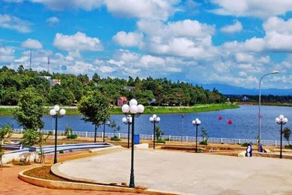
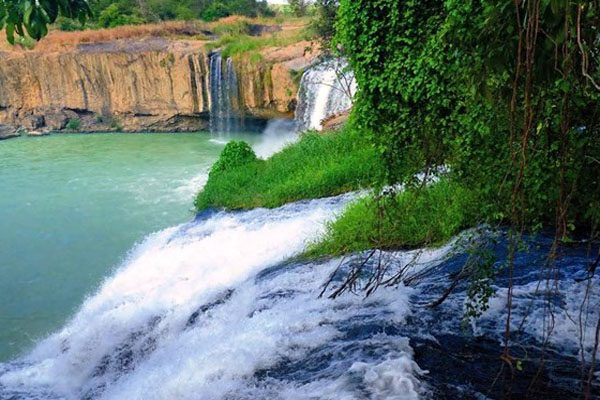
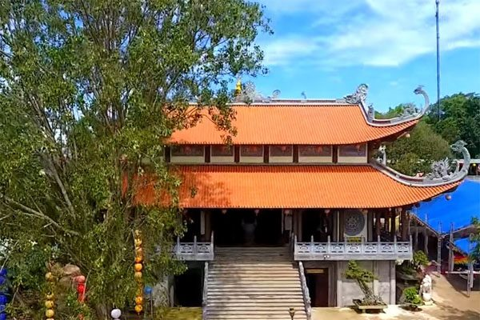
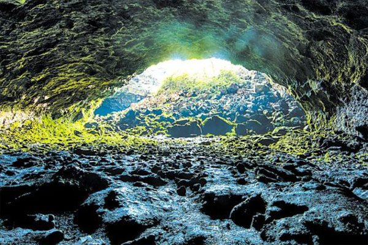
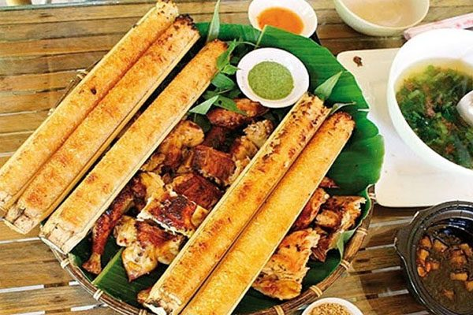

Đăk Nông là một tỉnh thuộc vùng Tây Nguyên khí hậu mát mẻ. Du lịch Đăk Nông cũng là một đề tài thú vị với nhiều du khách, những ngày hè nóng bức, bạn có thể đến Đăk Nông để nghỉ dưỡng, tránh xa sự ồn ào náo nhiệt của cuộc sống đầy bon chen.
Bạn đang có ý định du lịch Đăk Nông ? hãy chuẩn bị kỹ lưỡng hành trang về những điểm sắp phải đi qua, món ăn cần phải thưởng thức tại Đăk Nông ? cách đi lại sao cho tiết, kiệm tối ưu nhất. Trong bài viết này Du Lịch Việt sẽ giúp bạn hoàn tất những vấn đề này.
I. Tổng Quan Về Du lịch Đăk Nông.
Đăk Nông tỉnh thuộc cửa ngõ phía Tây của Tây Nguyên, có diện tích 6.514km2, có trung tâm kinh tế là thị xã Gia Nghĩa, có 7 huyện: Cư Jút, Đắk Glong, Đắk Mil, Đắk R’lấp, Đắk Song, Krông Nô, Tuy Đức.
Tỉnh Đăk Nông được thành lập vào ngày 1/1/2004, tách ra từ một số địa phương phía nam tỉnh Đăk Lăk, có nhiều thác nước đẹp đã nổi tiếng hấp dẫn du khách trong và ngoài nước.
Dân tộc chính: Việt, M’Nông, Ê Đê, Tày, Nùng,…
Điểm thăm quan du lịch: khu sinh thái rừng, hồ Đăk Mil,m hệ thống thác khói gồm Dray Sap,m thác giữa và Dray Nưr, thác Gia Long, thác Trinh Nữ, thác Diệu Thanh, thác ba tầng, hệ thống thác Đăk Nông, thị trấn Đăk Mil, bia ghi nhớ kỷ niệm 2 đoàn cán bộ Bắc Nam bắt tay nhau vào năm 1959 để mở đường 559 xẻ dọc Trường Sơn, nay là đường Hồ Chí Minh.
II. Thời Điểm Du Lịch Đăk Nông Tốt Nhất.
Thời tiết cũng là một trong những yếu tố ảnh hưởng lớn đến chuyến thăm quan của du khách. Đăk Nông có nhiệt độ ổn định hơn các khu vực khác. Một năm gồm 2 mùa: mùa khô tháng 11 – 4 , mùa mưa từ tháng 5- 10. Việc du lịch Đăk Nông vào mùa nào còn tuỳ thuộc vào sở thích của mỗi người.
Nếu du khách muốn nhìn thấy sự hùng vĩ của những dòng thác thì nên đến vào mùa mưa, từ làn thác tuôn trào trắng xoá, giữa rừng núi ngút ngàn. Nếu bạn ngại di chuyển thì có thể đến vào mùa hè tìm hiểu về thiên nhiên Tà Đùng.
III. Hướng Dẫn Đi Đến Đăk Lăk.
Tỉnh Đăk Nông cách tp Hồ Chí Minh 250km, hạ tầng nơi đây nhiều nơi chưa phát triển bằng cách tỉnh lân cận, du khách vẫn có thể đến đây bằng một số phương tiện như: Xe khách, xe máy.
1. Xe Máy.
Đây là phương tiện mà cộng đồng phượt thủ yêu thích, bạn có thể du lịch Đăk Nông theo cung đường Sài Gòn – Bình Dương đến ngã 3 sở Sao chạy đến ngã 4 chơn Thành, rẽ phải về thành phố Đồng Xoài, đến quốc lộ 14, đến thị xã Gia Nghĩa.
2. Xe Khách:
Phương tiện này đi đỡ vất vả hơn, du khách ở tp Hồ Chí Minh có thể đến bến xe miền Đông và mua vé xe của các hãng như Hoàng Long, Nhật Tang, Hồng Phúc để đi Đăk Nông. Theo Du Lịch Việt, bạn nên chọn mua vé xe khách để đi, vì như vậy sẽ an toàn hơn,vì quãng đường xa, đường núi khó đi.
3. Máy Bay:
Nếu bạn muốn tiết kiệm thời gian đi lại thì du khách ở tp lớn như Hà Nội, Hồ Chí Minh có thể mua vé máy bay trên website của các hãng máy bay lớn như: Vietnam Airline, Jetstar, Vietjet Air, để đi đến thành phố Buôn Ma Thuột, tỉnh Đăk Lăk rồi tiếp theo đón xe khách để đi Đăk Nông.
IV. Ở Đâu Khi Du Lịch Đăk Nông ?
Khi đến Đăk Nông, có nhiều bạn mới bắt đầu đi kiếm khách sạn, nhà nghỉ, đều này nên hạn chế vì vậy sẽ mất nhiều thời gian, có khi lựa chọn phòng khách sạn không như ý muốn.
Theo chúng tôi bạn nên lựa chọn 1 trong số khách sạn tại trung tâm thị xã Gia Nghĩa, vì nơi đây là trung tâm, khách sạn Đăk Nông ở đây chất lượng và tiện cho việc đi lại, khám phá của các bạn. Dưới đây là một số khách sạn bạn có thể lựa chọn.
1. Đăk Nông Lodge Resort:
Là khách sạn tại trung tâm thị xã Gia Nghĩa, toạ lạc Block 3 Nghĩa Trung, tiện bề cho việc di chuyển thăm quan của các bạn. Khách sạn được thiết kế theo tiêu chuẩn 3 sao có nhiều tiện ích như: massage, câu cá, xông hơi.
2. New Sunrise:
Là khách sạn thu hút nhiều khách du lịch Đăk Lăk, thiết kế theo chuẩn 3 sao, có nhiều tiện ích như: công viên giải trí, nước nóng, sân vườn rộng lớn giúp cho bạn có thể nghỉ ngơi, tĩnh dưỡng trong không gian yên tĩnh. Giá khách sạn tại địa chỉ số 30 Điện Biên Phủ, phường Nghĩa Trung, thị xã Gia Nghĩa.
Ngoài ra bạn có thể tham khảo một số nhà nghỉ giá rẻ khác ở Đắk Nông như: khách sạn Thiên Tân địa chỉ: số 206, đường Quang Trung, thị xã Gia Nghĩa điện thoại: 0261.3547666
V. Địa Điểm Du Lịch Đăk Nông Không Thể Bỏ Qua.
Sau khi đã có chổ ở ổn định để nghỉ ngơi, thư giãn, sang ngày hôm sau du khách có thể hành trình khám phá Đăk Nông, những danh lam thắng cảnh, địa điểm du lịch hấp dẫn sau:
1. Hồ Ea Snô.

Là một hồ nước đẹp rộng 80ha, thuộc xã Đăk Rồ, huyện Krông, cách thị xã Gia Nghĩa tầm 125km. Để đến hồ Ea Snô, khách du lịch Đăk Nông từ ngã 3 Gia Long có thể đi theo đường tỉnh lộ 4 vào trung tâm thị trấn Đăk Mâm. Tới ngã 3 bên trái tiện cho việc đi lại, bạn nên hỏi đường người dân, bởi tại đây khó đi.
Sau chặng đường vất vả, mọi cố gắng được đền đáp, thắng cảnh hồ Ea Snô hiện ra tựa như thiên đường giữa rừng đại ngàn. Hồ nước Ea Snô được thiên nhiên ưu ái với cảnh đẹp nên thơ, hồ nước trong veo, soi bóng cả bầu trời Đăk Nông xanh ngắt, xung quanh là những rừng cây xanh toả bóng mát khiến cho hồ nước trở nên cuốn hút hơn.
2. Hồ Tây.

Là một hồ nước vẻ đẹp nên thơ tại trung tâm thị trấn Đăk Mil. Hồ Tây có chiều dài 2000m, diện tích 40ha. Khi đến thăm quan hồ Tây, bạn sẽ thấy hồ được chia thành 2 nhánh ôm lấy vùng đồi cafe xanh tốt, không khác nào ốc đảo nổi lên tại cao nguyên lộng gió.
Tại hồ Tây du khách sẽ có cơ hội khám phá khu sinh thái được quy hoạch thành những khu vui chơi giải trí hấp dẫn.
3. Thăm Quan Thác Dray Sáp, thác Gia Long và Trinh Nữ.

Là một cụm thắng cảnh tự nhiên đẹp ngút ngàn tại Đăk Nông. Cụm danh 3 thác trải dài trong diện tích 1.566ha. Mỗi thác mang trong mình những vẻ đẹp riêng biệt gắn liền với truyền kỳ hấp dẫn.
+ Thác Dray Sap được giới du khách đánh giá là đẹp nhất vùng đất Tây Nguyên. Thác này gắn với truyền kỳ về nàng H’Mi xinh đẹp bị quái vật nuốt chửng trong lúc tự tình bên người yêu. Có dịp đến Đăk Nông bạn sẽ nghe kể về câu chuyện này.
+ Thác Gia Long: Thác được vua Gia Long đặt tên này, thác bắt nguồn từ con sông Sêrêpôk, ngày xưa khi vi hành, vua Gia Long đã chọn nơi này để nghỉ dưỡng, thưởng ngoạn, chính ông là người đã sai lính xẻ núi làm thành con đường thông liền với các thác thành viên khác.
+ Thác Trinh Nữ: sở dĩ có tên này bởi khi đến thăm quan, du khách sẽ thấy thác tựa như nàng thiếu nữ e ấp bên phiến đá ngầm, và cạnh đó là các con đường đá gồ ghề, làm cảnh quanh thêm quyến rũ giữ chân người khách lữ hành.
+ Thác Đắk G’lun: Là ngọn thác có vẻ đẹp hoang sơ, được tạo nên từ nhiều khối đá lớn, bằng phẳng. Thác nằm tại thôn 5, xã Quảng Tân, huyện Tuy Đức, cách biên giới Campuchia 40km.
Khi có dịp đến tham quan sau những cơn mưa sẽ tạo nên nhiều cầu vồng rực rỡ, cạnh dòng thác, khiến thác trông như một nàng tiên vẻ đẹp kiêu sa. Khách đến thác Đăk G’lun không chỉ để thăm quan thác mà còn khám phá hệ sinh thái phong phú đa dạng xung quanh cánh rừng xung quanh thác.
4. Khu Du Lịch Nậm Chung:
Là khu du lịch sinh thái nằm trong diện tích 12.300ha. Khi đến Nậm chung, du khách không chỉ có cơ hội khám phá tài nguyên thiên nhiên còn được chiêm ngưỡng cách hiện vật có giá trị lịch sử, văn hoá dân tộc.
Cảnh quang thiên nhiên tại Nậm Chung khiến người khách lữ hành tưởng như đang lạc vào cõi tiên, có dịp bạn hãy ghé khu du lịch Nậm Chung nhé.
5. Chùa Pháp Hoa:

Là một ngôi chùa theo kiến trúc nhà sàn Tây Nguyên độc đáo, chùa xây vào năm 1957, trên một ngọn đồi thuộc trung tâm thị xã Gia Nghĩa, trong một khuôn viên 800m2. Chùa được thiết kế phân chia làm 2 phần, chính điện cùng tháp 5 tầng.
Sự cuốn hút của địa danh du lịch tâm linh chùa Pháp Hoa là khi đứng tại khuôn viên phóng tầm nhìn ra xa, bạn sẽ thấy cảnh quang tuyệt đẹp nơi phố núi này.
7. Hang Động Núi Lửa Chư Bluk.

Là một thắng cảnh được giới chức năng Đăk Nông cho vào danh sách địa điểm du lịch cuốn hút năm 2014. Hang động được đánh giá là dài nhất khu vực Đông Nam Á. Nhờ chưa bị sự tác động bởi bàn tay con người nên hang động Núi Lửa Chư Bluk mang một vẻ đẹp hoang sơ
Để đến khám phá thắng cảnh này, du khách phải băng qua nhiều cánh rừng, núi hoang sơ, rậm rạp. Vẻ đẹp của hang động này được tạo thành nhiều ngã rẽ quanh co bên trong.
VI. Ăn Gì Khi Du Lịch Đăk Nông.
Ẩm thực cũng là một trong những yếu tố làm sinh động thêm nền văn hoá, du lịch Đăk Nông. Nói về đặc sản Đăk Nông có thể kể đến:
1. Rượu cần.
Là món đồ uống đặc trưng của người dân vùng Tây Nguyên trong đó có Đăk Nông. Rượu Cần không chỉ là món đồ uống được yêu thích mà còn là món ăn tinh thần của người dân tại Tây Nguyên, để cúng đất trời.
Rượu Cần sẽ được bày ra trong những dịp lễ tết, sum vầy gia đình, dân tộc quanh ché rượu Cần cùng uống rượu và quây quần, nhảy múa theo giai điệu cồng chiêng. Rượu được ủ trong vòng 1 tuần là có thể uống được. Nói về rượu cần thì ngon nhất là của người Ba Na, ngửi cũng làm cho người ta say.
2. Cơm Lam.

Là món đặc sản, tinh tuý của dân tộc Đăk Lăk, Tây Nguyên, mỗi khu vực sẽ có món cơm lam hương vị khác nhau. Để làm món cơm lam thơm ngon, người dân phải dùng loại gạo dẻo rửa sạch, nhồi vô ống tre, nứa cùng với nước, dùng lá cây rừng bịt hai đầu ống lại nướng đều tay. Cơm Lam ăn với gà nướng, bò nướng, thì hương vị tuyệt vời.
Khách du lịch Đăk Nông rất thích với món cơm lam đặc sản địa phương này.
Ngoài hai món trên, tại Đăk Lăk còn có nhiều món ăn đặc sắc hấp dẫn nữa như: lẫu lá rừng, cà đắng, canh thụt, măng chua rừng, cá lăng nướng than … có dịp du lịch Đăk Nông bạn hãy thưởng thức nhé!